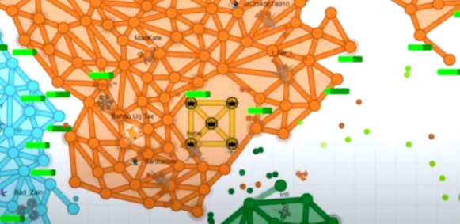

In Defly io, there are two types of tourneys: public and elite. A public tournament is hosted by a tournament organizer every week on Thursday and Friday and anyone with an account on Defly can join one.
On the other hand, an elite tournament is where the professional players compete for a large prize such as a custom season skin. These tournaments are much more competitive, and are streamed on YouTube with commentary. There are two types of elite tournaments. The Elite Teams Tournament and the Elite Defuse Tournament, which basically resemble the modes I mention in Game Modes. To join, you have to dm the team captain of the team you want to join. If they reply to you, that means that there are spots on the team, and they will have a tryout with you. If you are good enough, they will accept you. For rookies, I recommend watching videos to find the weakest elite team which will give you the highest acceptance rate. Some elite teams rarely take new players.
There also is a 1v1 tournament that you can sign up for as long as they have not exceeded the 64 player limit. 1v1 tournaments are played in single elimination, and the quaterfinals, semifinals, and final, are streamed on YouTUbe